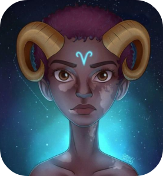
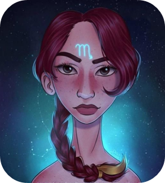
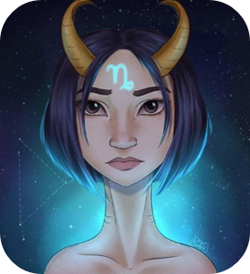

Signos zodiacales
Siendo el primer signo del zodíaco, la presencia de Aries casi siempre marca el inicio de algo turbulento y enérgico. Las personas de éste signo están buscando continuamente dinamismo, velocidad y competencia. Son siempre los primeros en todo – desde el trabajo hasta en los eventos sociales. Gracias a Marte, su planeta regente, Aries es uno de los signos más activos del zodiaco. Las personas que nacen bajo el signo de Aries, tienen como misión la búsqueda de respuestas a cuestiones personales y metafísicas. Esta es la característica más notable de esta encarnación.
Poderoso y confiable. Tauro es el primero cuando se trata de cosechar los frutos de su labor. Aman todo lo que sea bueno y hermoso y suelen rodearse de placeres materiales. Las personas nacidas bajo el signo de Tauro son muy sensuales y tienen un tacto mu agudo. El tacto es extremadamente importante para ellos, tanto en negocios como en el romance. Estables y conservadores, Tauro es uno de los signos más confiables del zodiaco. Su testarudez es un rasgo que le obliga a expulsar las cosas hasta el final, con el fin de cumplir con las normas.
Expresivos y de pensamiento rápido, Géminis representa dos lados diferentes de personalidad y nunca estrás seguro con cuál de las dos te estás viendo. Géminis puede ser sociable, comunicativo y listo para la diversión, mientras que por otro lado, puede ser muy serio, pensativo, inquieto e indeciso. Como un signo de aire, a Géminis le preocupan todos los aspectos de la mente. Este signo zodiacal es regido por Mercurio, el planeta de la comunicación, de la escritura y de la enseñanza.
Profundamente intuitivo y sentimental, Cáncer puede ser uno de los signos del zodiaco más difíciles de llegar a conocer. Cáncer es muy emocional y sensible, se preocupa por su hogar y su familia, Cáncer es simpático y suele ser muy apegado a la gente que lo rodea. Las personas nacidas bajo el signo de Cáncer son leales y empáticas, capaces de empatizar con tu sufrimiento y dolor.
Las personas nacidas bajo el signo de Leo, son líderes por naturaleza. Son dramáticos, creativos, seguros de sí mismos, dominantes y es extremadamente difícil resistirse a ellos. Pueden lograr todo lo que se propongan, trátese de familia y amigos o trabajo. Leo es un signo de fuego, lo que significa que ama la vida y espera pasarla bien. Al igual que a los otros signos de fuego, Sagitario y Aries, a Leo le gusta usar su mente para resolver los problemas más difíciles y tomar la iniciativa resolviendo situaciones complejas variadas.
Los Virgos suelen poner atención en los detalles más insignificantes y su profundo sentido de la humanidad los hace ser una de los signos más cuidadosos del zodiaco. Su aproximación metódica a la vida les asegura que nada será dejado al azar. Los Virgo suelen ser tiernos pero a su vez son sumamente cuidadosos.
Las personas nacidas bajo el signo de Libra son pacíficas y justas y odian estar solas. El compañerismo es muy importante para Libra y con su victoriosa mentalidad y actitud de cooperación, no soportan estar solos. Libra es un signo de Aire, intelectuales y de mente astuta. Los inspiran los buenos libros, las discusiones interminables y las personas interesantes.

Los nacidos bajo el signo de Escorpio son personas apasionadas y asertivas. Son determinados y decisivos, e investigarán hasta encontrar la verdad. Escorpio es un gran líder, siempre al tanto de la situación y con un prominente ingenio. Escorpio es un signo de Agua, y vive para experimentar y expresar sus emociones, A pesar de que las emociones son sumamente importantes para Escorpio, las manifiestan de manera distinta en comparación con el resto de los signos de Agua. En cualquier caso, puedes estar seguro de que Escorpio guardará tus secretos, cualesquiera que sean.
Sagitario es uno de los mayores viajeros de entre todos los signos del zodíaco. Su mente abierta y visión filosófica los motiva a vagar por el mundo en busca del sentido de la vida. Sagitario es extrovertido, optimista y entusiasta, y le gustan cambios. Los nacidos Sagitario son capaces de transformar sus ideas en acciones concretas y harán cualquier cosa para lograr sus objetivos.
Cuando se trata de profesionalismo y de valores tradicionales, Capricornio es el primero. Capricornio es práctico y se considera que es el signo más serio del zodíaco, posee una independencia que le permite tener avances significativos tanto en el plano personal como en los negocios. Como un signo de Tierra, para un Capricornio no hay nada más importante en la vida que la familia. Capricornio es un maestro del auto-control y tiene el potencial para ser un gran líder o gerente, siempre y cuando sea en el ámbito de los negocios.
Los Acuario son tímidos y callados, pero al mismo tiempo, pueden ser excéntricos y enérgicos. Sin embargo, en ambos casos, son pensadores y muy intelectuales, y aman ayudar a otros. Son capaces de ver las dos caras de una situación sin prejuicios, lo cual les permite resolver problemas.
Los Piscis son muy amistosos, así que siempre los encontrarás en compañía de gente diferente. Los Piscis son abnegados, siempre tienen la disposición de ayudar a los demás, sin esperar recibir nada a cambio. Piscis es un signo de Agua, y como tal este signo se caracteriza por la empatía y por su capacidad para expresar sus emociones.